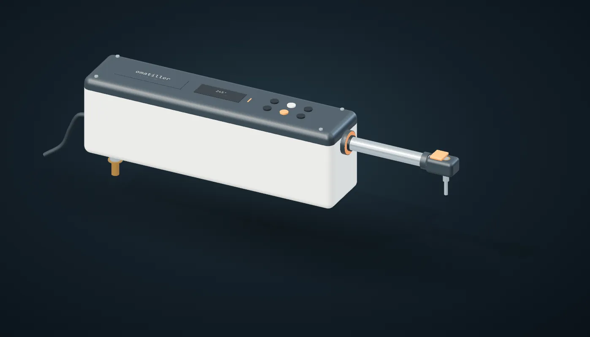

Open marine hardwareConcept 02
omatiller.
From the screw
to the software.A tiller pilot, built from scratch for Dash.

Loading the assembly…
Drag to orbit · scroll to zoom · select a part
Under the cover
Choose a component to exploreMade to come apart.
The housing is 445 mm long, the same as the classic tiller pilots, and a little taller to fit the brushless drive. Four screws lift the service cover off its gasket, and a wiper cleans the ram where it meets the weather.
445 × 100 × 138 mm · service cover · replaceable sealsOur hardware. Our protocol. Your boat.
No NMEA network
required.
Omatiller is being designed around its own heading sensor, controller, and motor drive. Holding a heading won't require an NMEA 2000 backbone, a proprietary chartplotter, or a gateway between them.
Existing instruments can still have a place: omakeel already reads NMEA 0183 GPS and AIS data. NMEA is a compatibility option for the wider suite, not a prerequisite for this pilot.
Planned architecture · optional Omahoy app connection
Designed for Dash
A 24.5-foot Pacific Seacraft with a tiller and a lot of sailing ahead. The second study uses the mounting spacing common tiller pilots use: the pin 589 mm from the seat socket and 460 mm from the rudder stock. The 250 mm of travel is still a placeholder until we measure Dash's tiller.
Open all the way down
Python CAD, an original Rust control stack, and a design you can inspect. Part outlines for the motor and controller are placeholders until the parts are in hand. Bench testing and supervised boat trials come before steering.
Follow the build on GitHub ↗